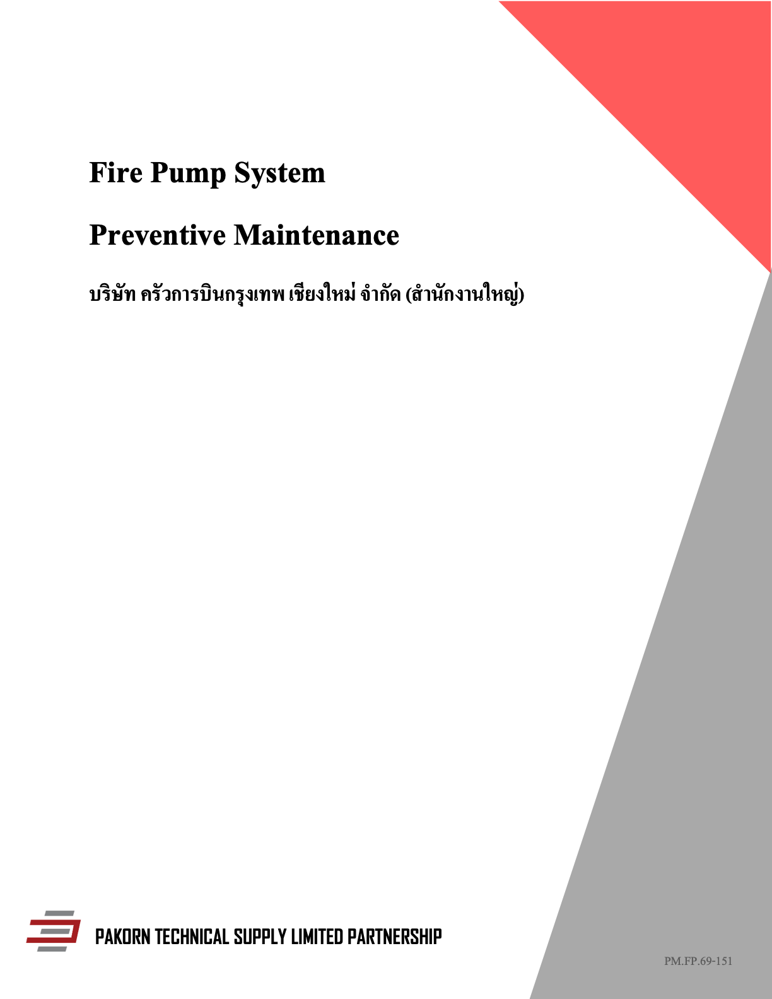
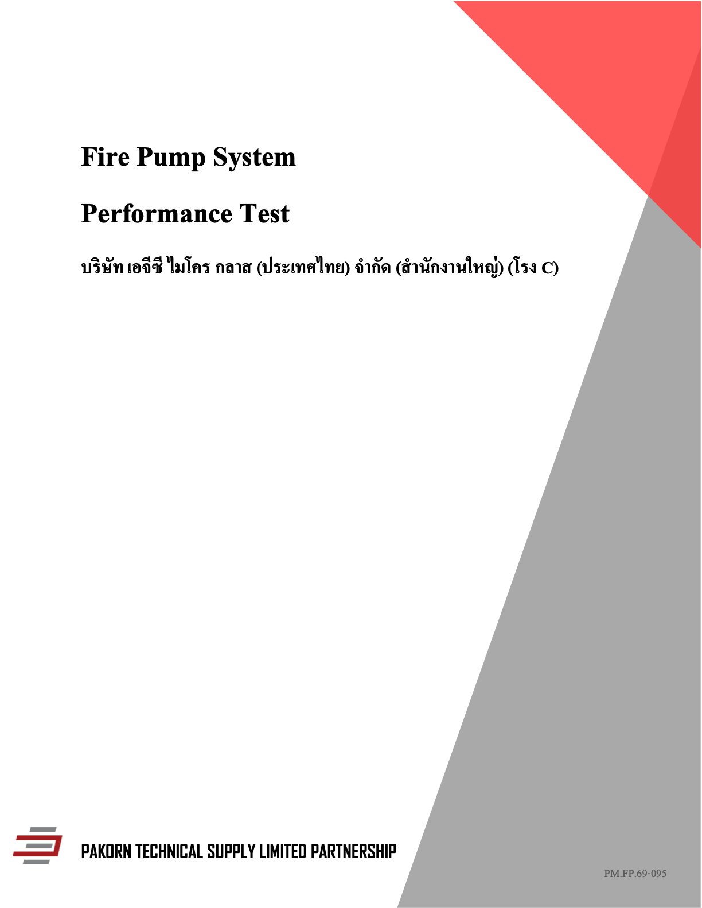

คู่มือใช้งาน IDC Smart Report Studio
สำหรับช่างเทคนิคและพนักงานสำนักงาน • รุ่นต้นแบบ 0.1 • ปรับปรุง 1 พฤศจิกายน 2569
ใช้คู่มือนี้เพื่อทดลองสร้างรายงาน Fire Pump ตั้งแต่เปิดโครงการ เพิ่มรูป กรอกผลตรวจ ตรวจพรีวิว จนถึงบันทึก PDF โดยใช้ชื่อปุ่มตามเว็บรุ่นปัจจุบัน
อ่านก่อนเริ่ม: รุ่นนี้เก็บข้อมูลในเบราว์เซอร์เครื่องเดียว ยังไม่ส่งข้อมูลระหว่างช่างกับสำนักงาน ส่วนรายงานที่แก้ข้อมูลได้มี 5 หมวดหลัก ไม่ได้สร้างครบทุกหน้าของ PDF ต้นฉบับ 56 และ 44 หน้า
1. เริ่มต้นแบบสั้น
- เปิดเว็บ แล้วไปที่ โครงการทั้งหมด → สร้างโครงการ
- ใส่ชื่อลูกค้า สถานที่ เลขที่รายงาน วันที่ตรวจ และเลือกเทมเพลต
- เปิดข้อมูลโครงการ ใส่ชื่ออุปกรณ์และ Serial Number
- ไป คลังภาพโครงการ → เพิ่มรูปภาพ แล้วจัดหมวดและใส่คำบรรยาย
- ไป งานของช่างเทคนิค → แบบตรวจสอบ และ ค่าทดสอบสมรรถนะ เพื่อบันทึกข้อมูลจริง
- เปิด Report Builder ตรวจข้อมูลและเขียนสรุปผล
- กด ตรวจความครบถ้วน แล้วแก้รายการที่ยังขาด
- กด ส่งออก PDF เลือกบันทึกเป็น PDF จากหน้าต่างพิมพ์ของเบราว์เซอร์
การบันทึก PDF ฉบับร่างทดลองทำได้ก่อนส่งตรวจ การกดส่งออกไม่ใช่การอนุมัติหรือรับรองรายงาน
2. เปิดเว็บครั้งแรก
เปิดไฟล์ dist/index.html ในโฟลเดอร์ smart-report-studio ด้วย Chrome หากเปิดไฟล์โดยตรงแล้วการเก็บรูปหรือการเปิด PDF มีปัญหา ให้เปิดผ่าน Local Server แทน
สำหรับผู้ดูแลเครื่อง เปิด Terminal แล้วรัน:
cd "/Users/idc/Desktop/Mix/App template Pakorn/smart-report-studio"
python3 -m http.server 4173 --bind 127.0.0.1 --directory distเปิดเบราว์เซอร์ที่ http://127.0.0.1:4173 และเปิด Terminal ค้างไว้ระหว่างใช้งาน กด Control+C ใน Terminal เมื่อต้องการหยุด Server ต้องมี Python 3 ในเครื่องก่อนใช้คำสั่งนี้
ใช้วิธีเปิดเดิมทุกครั้ง: เปิดเป็นไฟล์, localhost และ 127.0.0.1 ใช้พื้นที่ข้อมูลในเบราว์เซอร์แยกกัน รวมถึงแต่ละพอร์ตและแต่ละ Browser Profile หากเปลี่ยนวิธีเปิดแล้วข้อมูลดูเหมือนหาย ให้กลับไปเปิดที่อยู่เดิมก่อน อย่าล้างข้อมูลเบราว์เซอร์เพื่อแก้ปัญหา
รุ่นนี้ยังไม่มีหน้าเข้าสู่ระบบ ชื่อ Pakorn และบทบาทที่เห็นในมุมจอเป็นข้อมูลแสดงตัวอย่าง ไม่ใช่บัญชีผู้ใช้ที่ยืนยันตัวตนแล้ว
3. เลือกเทมเพลตให้ตรงงาน
| ตัวเลือกในระบบ | PDF ที่ใช้เป็นต้นแบบ | การใช้งาน |
|---|---|---|
| PM-FP-001 — Preventive Maintenance | PM.FP.69-151 ครัวการบินกรุงเทพ เชียงใหม่ 56 หน้า | รายงานตรวจสอบและบำรุงรักษา |
| PT-FP-001 — Performance Test | PM.FP.69-095 หรือ PMFP69~1.PDF ของ AGC โรง C 44 หน้า | รายงานทดสอบสมรรถนะ |
เลือกจาก Template Library แล้วกด ใช้เทมเพลตนี้ เพื่อสร้างโครงการ หรือเลือกในหน้าต่างสร้างโครงการได้เช่นกัน
ทั้งสองแบบใช้ปกแดง–เทาและโลโก้ Pakorn แยกตามไฟล์ต้นฉบับ ปก Classic ไม่มีภาพอุปกรณ์ขนาดใหญ่ พื้นที่แก้ไขรายงานปัจจุบันแบ่งเป็น หน้าปก / ผลการตรวจสอบ / ผลทดสอบสมรรถนะ / สรุปผลและข้อเสนอแนะ / ภาพหลักฐานและภาคผนวก


4. รู้จักเมนูและทางไปหน้าที่ใช้บ่อย
| เมนู | ใช้ทำอะไร |
|---|---|
| ภาพรวมการทำงาน | ดูจำนวนงานและเปิดโครงการล่าสุด |
| โครงการทั้งหมด | สร้าง ค้นหา เลือก และแก้ข้อมูลโครงการ |
| Template Library | เลือกรูปแบบรายงานจากสองต้นฉบับ |
| งานของช่างเทคนิค | ทางไปแบบตรวจ รูปภาพ ค่าทดสอบ และเอกสาร |
| คลังภาพโครงการ | เพิ่มภาพ จัดหมวด และแก้คำบรรยาย |
| Report Builder | แก้ข้อมูล ดูรายงาน และเปิด PDF ต้นฉบับเทียบ |
| ตรวจความครบถ้วน | ดูข้อมูลที่ขาดและกดไปแก้ไข |
| การอนุมัติและส่งออก | ทดลองส่งตรวจ ส่งกลับ และเก็บสำเนาข้อมูล |
| ตั้งค่าและประวัติ | ดูประวัติในเครื่องและสำรองข้อมูลโครงการเป็น JSON |
ดูชื่อลูกค้าและรหัสงานบนแถบโครงการก่อนกรอกทุกครั้ง เปลี่ยนโครงการด้วยปุ่มลูกศรลงด้านขวาของแถบนี้ ในโทรศัพท์เปิดเมนูหลักได้จากปุ่มสามขีด และมีเมนูล่างสำหรับ งาน / แบบตรวจ / รูปภาพ / รายงาน
5. สร้างโครงการและใส่ข้อมูลอุปกรณ์
- เปิด โครงการทั้งหมด แล้วกด สร้างโครงการ
- กรอกชื่อลูกค้า สถานที่หรือสาขา เลขที่รายงาน วันที่ตรวจ และเทมเพลตให้ครบ
- กด สร้างโครงการ เลขที่รายงานใหม่ต้องไม่ซ้ำกับงานที่มีอยู่
- ในส่วนข้อมูลโครงการที่เลือก ใส่ชื่ออุปกรณ์และ Serial Number จากหลักฐานของงานนั้น
- กด ข้อมูลอุปกรณ์ หากต้องกรอก Rated Flow และ Rated Pressure จาก Nameplate หรือเอกสารอ้างอิง
ค่าที่กรอกบันทึกในเครื่องอัตโนมัติ สังเกตข้อความสถานะบันทึกด้านบน หากขึ้นว่าบันทึกไม่สำเร็จ ให้เก็บข้อมูลต้นฉบับไว้และแก้ปัญหาพื้นที่จัดเก็บก่อนกรอกต่อ
สร้างงานจากปีก่อน: เลือกโครงการเดิมก่อน แล้วกด สร้างจากงานเดิม ระบบนำข้อมูลประจำอุปกรณ์มาใช้ซ้ำ แต่ล้างคำตอบ ผลทดสอบ สรุป รูปที่เลือก และ Snapshot ของงานใหม่ ตรวจเลขรายงาน วันที่ และข้อมูลอุปกรณ์อีกครั้งก่อนเริ่มบันทึก งานเดิมยังอยู่ในรายการ
6. เพิ่มรูปและเอกสารประกอบ
รูปภาพ
- เปิด คลังภาพโครงการ แล้วตรวจรหัสงานให้ถูกต้อง
- กด เพิ่มรูปภาพ เลือกได้หลายภาพพร้อมกัน
- เลือกหมวด เช่น Fire Pump, Jockey Pump, Controller, Pressure Gauge, Maintenance หรือ Defect
- ใส่คำบรรยายที่อธิบายสิ่งที่เห็น เช่น “เกจด้านส่งขณะทดสอบที่จุด 100%”
- เมื่อแก้คำบรรยาย ให้คลิกออกจากช่องเพื่อให้การเปลี่ยนแปลงถูกบันทึก
รับ JPG, PNG และ WebP ไม่เกิน 15 MB ต่อภาพ ภาพไฟล์เดียวกันที่เพิ่มซ้ำในโครงการเดิมจะถูกข้าม หากเป็น HEIC ให้แปลงเป็น JPG ก่อน
ภาพที่เขียนว่า ภาพอ้างอิงจากรายงานเดิม หน้า 10 เป็นภาพของ PDF เดิม ไม่นับเป็นหลักฐานปัจจุบันและไม่ส่งเข้าเล่มงานใหม่ ต้องเพิ่มภาพของงานที่กำลังทำเอง
ในคลังภาพยังมีปุ่ม ใช้เป็นหน้าปก จากโหมดเดิม แต่ปก Classic ปัจจุบันยึดต้นฉบับและไม่แสดงภาพอุปกรณ์ ปุ่มนี้จึงไม่เปลี่ยนปกแดง–เทา ไม่จำเป็นต้องเลือกเพื่อทำรายงานรุ่นนี้
หน้าภาพหลักฐานในฉบับพิมพ์แบ่งกลุ่มละ 4 รูป รูปอ้างอิงเดิมถูกแยกออก ยังไม่มีการลากวางภาพลงตำแหน่งรายหน้าตามต้นฉบับครบทั้งเล่ม
เอกสารและใบสอบเทียบ
เปิด งานของช่างเทคนิค → เอกสารและใบสอบเทียบ → เพิ่มเอกสาร รองรับ PDF, JPG และ PNG ไม่เกิน 25 MB ต่อไฟล์ ระบุวันหมดอายุจากเอกสารจริง และกด เปิดต้นฉบับ เพื่อตรวจไฟล์ได้
วันที่หมดอายุก่อนวันตรวจจะแสดงคำเตือนให้ทวนสอบ ไม่ใช่การตัดสินความถูกต้องของใบรับรองอัตโนมัติ ไฟล์แนบยังไม่ถูกรวมเป็นหน้าใน PDF ที่ส่งออก ต้องจัดเตรียมและตรวจต้นฉบับแยกไว้
7. กรอกแบบตรวจสอบหน้างาน
เปิด งานของช่างเทคนิค → แบบตรวจสอบ ปัจจุบันมีคำถามตัวอย่าง 7 รายการ ครอบคลุมห้องเครื่อง ตู้ควบคุม และเครื่องสูบน้ำ
| คำตอบ | วิธีใช้ในต้นแบบ |
|---|---|
| ปกติ | ตรวจแล้วพบว่าสภาพปกติ |
| ผิดปกติ | ตรวจพบปัญหา ต้องกรอกหมายเหตุให้ชัด |
| ไม่เกี่ยวข้อง | เลือกเมื่อรายการนั้นไม่เกี่ยวกับงาน พร้อมอธิบายบริบทในหมายเหตุ |
| ไม่ได้ตรวจ | ยังไม่สามารถตรวจรายการนั้น ระบุเหตุผลไว้ในหมายเหตุ |
PDF เดิมใช้ None ในความหมายว่า “ไม่ได้ติดตั้ง” แต่ตัวเลือกในต้นแบบยังเป็นแบบย่อ หากพบกรณีนี้ให้บันทึกคำว่า ไม่ได้ติดตั้ง ในหมายเหตุด้วย เพื่อให้ผู้ตรวจทานเข้าใจตรงกัน
ตัวอย่างการเขียนหมายเหตุ: “พบรอยรั่วบริเวณข้อต่อด้านส่ง ถ่ายภาพประกอบไว้ในหมวด Defect” อย่าใช้ข้อความตัวอย่างแทนสิ่งที่ตรวจพบจริง
แถบความคืบหน้าคิดจากการตอบแบบตรวจและสถานะจุดทดสอบ ไม่ได้หมายความว่ารูป เอกสาร หรือข้อมูลรับรองครบแล้ว ต้องเปิด ตรวจความครบถ้วน อีกครั้ง
8. บันทึกผลทดสอบสมรรถนะ
เปิด งานของช่างเทคนิค → ค่าทดสอบสมรรถนะ จะพบจุดทดสอบ 0%, 100% และ 150%
- หากทดสอบแล้ว ให้เลือก ทดสอบแล้ว
- ใส่ Actual Flow หน่วย GPM, Discharge หน่วย PSI และ Suction หน่วย PSI ตามค่าที่วัดจริง
- Suction สามารถมีค่าติดลบได้ตามข้อมูลจริง ส่วน Actual Flow ต้องไม่ติดลบ
- หากทดสอบไม่ได้ ให้เลือก ไม่ได้ทดสอบ และระบุเหตุผลในช่องหมายเหตุ
- หากยังไม่ได้ดำเนินการ ให้คงสถานะ รอบันทึก ไว้
ไม่ได้ทดสอบไม่เท่ากับศูนย์: เมื่อเปลี่ยนสถานะเป็นรอบันทึกหรือไม่ได้ทดสอบ ระบบจะล้างค่าตัวเลขในแถวนั้น หากกลับมาเลือกทดสอบแล้วต้องกรอกใหม่
กราฟบนหน้ากรอกค่าใช้ Actual Flow และ Discharge จากข้อมูลที่บันทึก ไม่สร้างจุดของรายการที่ไม่ได้ทดสอบ ระบบยังไม่สรุป Pass/Fail ตามมาตรฐาน การมีกราฟไม่ได้แปลว่าอุปกรณ์ผ่านการรับรอง
Rated Flow เป็นข้อมูลประจำเครื่อง ส่วน Actual Flow เป็นค่าที่วัดของแต่ละจุด จึงไม่ควรกรอกให้เท่ากันโดยไม่มีหลักฐาน
9. จัดทำรายงานและเทียบ PDF เดิม
เปิด Report Builder ฝั่งซ้ายเป็นเนื้อหาและตัวเลือก ฝั่งขวาเป็นพรีวิว เลือกหมวดจากรายการเพื่อดูหน้าปก ผลตรวจ ผลทดสอบ สรุป หรือภาพหลักฐาน
แก้ชื่อลูกค้า สถานที่ รหัสงาน และวันที่ได้ในส่วนหน้าปก พรีวิวจะเปลี่ยนตามข้อมูล ข้อมูลรูปและตารางดึงมาจากสิ่งที่บันทึกในโครงการนี้
กด สร้างร่างจากข้อมูล เพื่อดูร่างสรุป อ่านและแก้ความหมายก่อนกด นำไปใช้เป็นร่างสรุป ฟังก์ชันนี้ประกอบข้อความตามกฎที่เขียนไว้ ยังไม่ได้เชื่อม AI ภายนอก หากมีสรุปอยู่แล้ว การนำร่างไปใช้จะเขียนทับข้อความสรุปปัจจุบัน ควรคัดลอกข้อความที่ต้องการเก็บไว้ก่อน
กด เทียบ PDF ต้นฉบับ เพื่อเปิดไฟล์อ้างอิงของเทมเพลตที่เลือก และเลือกหน้าจากรายการด้านข้างได้ครบ 56 หรือ 44 หน้า หากช่องแสดง PDF ไม่ทำงาน ให้ใช้ลิงก์ เปิด PDF ต้นฉบับ ภายในช่องนั้น
PDF ต้นฉบับกับพรีวิวงานใหม่เป็นคนละส่วน: ต้นฉบับมีผลตรวจ ภาพ และลายเซ็นของงานเก่า ส่วนพรีวิวใช้ข้อมูลใหม่ที่กรอก การเปิดดูต้นฉบับครบทุกหน้าไม่ได้หมายความว่าระบบสร้างรายงานใหม่ครบทุกหน้าแล้ว
ในแท็บ ตั้งค่า กด จัดลำดับส่วนรายงาน แล้วใช้ลูกศรขึ้นลงได้ ปัจจุบันเป็นการสลับหมวด ไม่ใช่ Template Designer แบบลากวางองค์ประกอบรายหน้า
10. ตรวจความครบถ้วนและทดลองส่งตรวจ
กด ตรวจความครบถ้วน หรือเปิดเมนูชื่อเดียวกัน ระบบตรวจข้อมูลพื้นฐานต่อไปนี้:
- มีชื่อลูกค้าและ Serial Number
- ตอบแบบตรวจทุกข้อ และรายการผิดปกติมีหมายเหตุ
- จุดทดสอบมีสถานะ และค่าที่จำเป็นครบเมื่อเลือกทดสอบแล้ว
- รายการที่ไม่ได้ทดสอบมีเหตุผล
- มีภาพของงานปัจจุบันอย่างน้อยหนึ่งรูป โดยไม่นับภาพอ้างอิง
- มีข้อความสรุปผล
กด ไปแก้ไข ข้างแต่ละรายการเพื่อกลับไปหน้าที่เกี่ยวข้อง การตรวจนี้ไม่ได้ยืนยันว่าภาพถูกประเภท ใบสอบเทียบถูกต้อง หรือผ่านเกณฑ์วิศวกรรม
เมื่อต้องการทดลองขั้นตอนตรวจทาน ให้เปิด การอนุมัติและส่งออก:
- กด ส่งตรวจทาน (ทดลอง) เมื่อข้อมูลตามแบบฟอร์มครบ
- ระหว่างรอตรวจ ข้อมูลจะถูกล็อกจากการแก้ทั่วไป
- หากต้องแก้ ให้ใส่เหตุผลแล้วกด ส่งกลับแก้ไข
- หากต้องการเก็บสำเนา ให้ใส่หมายเหตุแล้วกด ล็อกฉบับตรวจทาน (ทดลอง)
- ระบบเก็บ Snapshot หรือสำเนาข้อมูล ณ ขณะนั้น ดูรายการและดาวน์โหลด JSON ได้
- เมื่อจะทำฉบับแก้ไข ให้กด สร้าง Revision ใหม่ สำเนาที่เก็บก่อนหน้าจะยังอยู่
ทุกขั้นตอนนี้เกิดในเครื่องเดียว ไม่มีการส่งแจ้งเตือนถึงวิศวกรจริง ไม่มีการลงลายมือชื่อ และการล็อกในต้นแบบไม่ใช่ระบบรับรองเอกสารจริง
11. บันทึกรายงานเป็น PDF
- เปิด Report Builder หรือ การอนุมัติและส่งออก แล้วกด ส่งออก PDF
- ในหน้าต่างพิมพ์ เลือกปลายทาง Save as PDF / บันทึกเป็น PDF
- เลือกขนาด Letter ให้ตรงกับรายงานที่ต้นแบบสร้าง ไม่บังคับเป็น A4
- ปิด Header/Footer ที่เบราว์เซอร์เพิ่มเอง เช่น URL และวันที่พิมพ์ หากมีตัวเลือกนี้
- เปิดการพิมพ์พื้นหลัง หากลายปกหรือสีตารางไม่ปรากฏในตัวอย่างพิมพ์
- ตรวจทุกหน้า โดยเฉพาะข้อความยาว ตาราง รูป และคำบรรยาย ก่อนกดบันทึก
- เปิด PDF ที่บันทึกแล้วตรวจซ้ำอีกครั้ง
ขนาดต้นฉบับส่วนใหญ่เป็น Letter แต่ครัวการบินหน้า 43 และ AGC หน้า 25 เป็นแนวนอน และ AGC หน้า 37–43 เป็น A4 สแกน ข้อมูลนี้ใช้เทียบเอกสารเดิม ส่วน Export ปัจจุบันสร้างเฉพาะหมวดที่รองรับด้วยหน้า Letter ยังไม่ได้รวมทุกหน้าและขนาดกระดาษผสมตามต้นฉบับ
หากโหลดภาพไม่สำเร็จ ระบบจะไม่พิมพ์ต่อ ให้กลับไปตรวจว่ารูปเปิดได้และลองใหม่ ยังไม่มีปุ่มส่งออก Word/DOCX ในรุ่นนี้
12. เก็บข้อมูลและสำรองงาน
เปิด ตั้งค่าและประวัติ → สำรองข้อมูล JSON เพื่อดาวน์โหลดข้อมูลโครงการ ไฟล์นี้มีข้อมูลที่กรอก แต่ ไม่มีไฟล์รูปและเอกสารแนบ และรุ่นนี้ยังไม่มีปุ่มนำเข้า JSON เพื่อกู้คืนอัตโนมัติ
เก็บโฟลเดอร์รูปต้นฉบับและเอกสารของแต่ละงานไว้ต่างหาก พร้อม PDF ที่ส่งออก การคัดลอกโฟลเดอร์เว็บอย่างเดียวไม่ได้คัดลอกข้อมูลที่เก็บในเบราว์เซอร์ไปด้วย
ใช้ Browser Profile และที่อยู่เว็บเดิม หลีกเลี่ยงโหมดไม่ระบุตัวตนและอย่าล้างข้อมูลเว็บไซต์ก่อนเก็บงานที่ต้องการ เมื่อเปิดเว็บจากเครื่องอื่นจะไม่เห็นงานของเครื่องนี้ เพราะยังไม่มีระบบซิงก์หรือบัญชีผู้ใช้ร่วมกัน
13. แก้ปัญหาที่พบบ่อย
| อาการ | ตรวจและแก้ไข |
|---|---|
| ดับเบิลคลิกแล้วเว็บไม่เปิด | คลิกขวาไฟล์ index.html แล้วเลือกเปิดด้วย Chrome หรือให้ผู้ดูแลเปิด Local Server ตามข้อ 2 |
| เปลี่ยนเครื่องหรือเปลี่ยน URL แล้วไม่เห็นข้อมูล | กลับไป Browser Profile และที่อยู่เว็บเดิม ข้อมูลไม่ได้ซิงก์ข้ามเครื่องหรือข้ามที่อยู่ |
| กรอกหรือแก้ไขไม่ได้ | ตรวจว่างานอยู่ระหว่างรอตรวจหรือถูกล็อกแล้วหรือไม่ ใช้ส่งกลับแก้ไขหรือสร้าง Revision ตามสถานะ |
| ส่งตรวจไม่ได้ | เปิดตรวจความครบถ้วน แก้รายการที่ขาด รวมทั้ง Serial Number เหตุผลที่ไม่ได้ทดสอบ และรูปงานปัจจุบัน |
| รูปไม่เข้า | ตรวจชนิด JPG/PNG/WebP ขนาดไม่เกิน 15 MB และดูว่าเป็นภาพซ้ำหรือไม่ |
| มีรูปในคลังแต่ระบบยังบอกไม่มีหลักฐาน | หากเป็นรูปอ้างอิงจาก PDF เดิม รูปนั้นไม่นับ ต้องเพิ่มรูปของงานนี้ |
| ตารางทดสอบว่าง | ตรวจสถานะว่าเลือกทดสอบแล้ว และกรอกตัวเลขครบ ไม่ใช้ศูนย์แทนไม่ได้ทดสอบ |
| ปุ่มใช้เป็นหน้าปกไม่เปลี่ยนปก | ปก Classic ใช้กราฟิกเดิม ไม่มีภาพอุปกรณ์บนปกตามข้อ 6 |
| เพิ่มใบ Calibration แล้วไม่อยู่ใน PDF | ต้นแบบเก็บไฟล์แยก ยังไม่รวมหน้าภาคผนวกเข้ารายงาน |
| PDF มีข้อความหรือรูปถูกตัด | ตรวจ Print Preview ใช้ Letter แล้วลดข้อความหรือจำนวนรูปในงานทดลอง ยังต้องพัฒนา Pagination ต่อ |
| ขึ้นบันทึกไม่สำเร็จ | หยุดกรอก เก็บข้อความ/รูปต้นฉบับและสำรอง JSON ที่ทำได้ ตรวจพื้นที่จัดเก็บ อย่าล้างเว็บไซต์ก่อนเก็บข้อมูล |
14. แบบฝึกทดลองหนึ่งงาน
ใช้ข้อมูลสมมติสำหรับฝึกเท่านั้น ไม่ใช้แทนผลตรวจจริง
- สร้างโครงการชื่อลูกค้า “บริษัท ตัวอย่าง จำกัด” สถานที่ “ห้องเครื่อง A” เลขที่รายงาน “DEMO-001” และเลือกเทมเพลต PM-FP-001
- ใส่ Serial Number “DEMO-SN-001” โดยเก็บตัวอย่างนี้แยกจากข้อมูลอุปกรณ์จริง
- เพิ่มภาพที่อนุญาตให้ใช้ฝึกหนึ่งรูป และเขียนคำบรรยายว่า “ภาพประกอบสำหรับทดลองระบบ”
- ทดลองเลือกผิดปกติหนึ่งข้อแล้วใส่หมายเหตุว่า “ข้อมูลสมมติสำหรับฝึก” ข้อที่เหลือลองตัวเลือกตามสถานการณ์ฝึก
- เลือกไม่ได้ทดสอบทั้งสามจุด พร้อมเหตุผลว่า “การสาธิตระบบ ไม่มีการทดสอบจริง” ไม่กรอกค่าตัวเลข
- สร้างร่างสรุป ตรวจว่ามีข้อความไม่ได้ทดสอบ แล้วเปิดพรีวิวและ PDF ต้นฉบับเพื่อแยกความแตกต่าง
- เปิดตรวจความครบถ้วน ทดลองส่งตรวจ ส่งกลับ ล็อก Snapshot และสร้าง Revision ใหม่
- บันทึก PDF ตั้งชื่อว่า “DEMO-001_ทดลองระบบ.pdf” และสำรอง JSON เพื่อเรียนรู้ขอบเขตข้อมูลที่เก็บได้
เมื่อจบการฝึก คุณควรสร้างงาน ใส่หลักฐาน ตรวจข้อมูลที่ขาด และบันทึก PDF ฉบับร่างได้ โดยแยกเอกสารอ้างอิงกับผลตรวจงานใหม่ได้ชัดเจน
15. สิ่งที่ยังต้องพัฒนาก่อนใช้เป็นระบบส่งลูกค้าครบวงจร
- แบบฟอร์ม คำถาม และการจับคู่ข้อมูลครบตามรายงานทั้งสองฉบับ
- จัดหน้า รูป ตาราง และภาคผนวกครบเล่ม พร้อมตรวจความเหมือนจากไฟล์ส่งออกจริง
- ระบบสมาชิกและสิทธิ์ผู้ใช้ การทำงานร่วมกัน การซิงก์ และการเปิดแอปออฟไลน์เต็มรูปแบบ
- AI จำแนกรูป อ่านป้าย/เกจ และช่วยเขียนโดยมีขั้นตอนยืนยันข้อมูล
- การคำนวณและประเมินตาม Rule Set ที่บริษัทตรวจรับรองแล้ว
- การอนุมัติและลงนามจริง การส่งออก DOCX และการสำรอง/กู้คืนทั้งข้อมูลและไฟล์แนบ
คู่มือนี้อธิบายรุ่นต้นแบบที่มีอยู่ ไม่ถือว่าฟังก์ชันในรายการพัฒนาข้างต้นใช้งานได้แล้ว
16. จุดที่ข้อมูลเปลี่ยนในรายงาน
| ข้อมูลที่กรอก | ตำแหน่งที่เปลี่ยนในพรีวิว/รายงาน |
|---|---|
| ชื่อลูกค้า สถานที่ วันที่ และเลขที่รายงาน | ข้อความบนหน้าปก Classic ของเทมเพลตที่เลือก |
| คำตอบของแบบตรวจ เช่น Y/N และหมายเหตุ | แถวผลตรวจในหน้าผลการตรวจสอบ |
| ภาพที่เพิ่มในโครงการ | หน้าภาพหลักฐานและภาคผนวก พร้อมคำบรรยายของภาพ |
| Actual Flow / Discharge / Suction | ตาราง Flow and Pressure Record |
| Flow กับแรงดันด้านส่งที่บันทึกจริง | จุดและเส้นกราฟตามข้อมูลที่มี |
| ไม่ได้ทดสอบ + เหตุผล | หมายเหตุในส่วนผลทดสอบ ไม่สร้างเลขศูนย์หรือจุดกราฟ |
| สรุปผลและข้อเสนอแนะ | ข้อความในส่วนสรุปผลและข้อเสนอแนะ |
| ชื่ออุปกรณ์และ Serial Number | แสดงเป็นข้อมูล Asset หรือในหน้าผลทดสอบที่เกี่ยวข้อง ไม่แสดงบนปก |
| เอกสารใบสอบเทียบ | เก็บในหน้ารายการเอกสารของต้นแบบ ยังไม่รวมหน้าเอกสารใน PDF ใหม่ |
ตัวอย่างที่ทดสอบกับโค้ด: เมื่อบันทึกผล 100% เป็น Flow 744 GPM, Discharge 86 PSI และ Suction −6 PSI ค่าจะไปอยู่แถว 100% ของตาราง และกราฟวางจุดที่ Actual Flow 744 GPM ส่วนจุด 150% ที่เลือกไม่ได้ทดสอบจะแสดงหมายเหตุพร้อมเหตุผล โดยไม่มีตัวเลขที่สร้างขึ้นเอง รายงานนี้เป็นการทดสอบตรรกะของต้นแบบ ไม่ใช่ผลตรวจงานลูกค้าจริง
การทดสอบครอบคลุมการสร้างหน้าและส่งเหตุการณ์ผ่าน test harness 37 กรณี แต่ยังไม่ได้เปิด Chrome จริงเพื่อดูการตัดบรรทัดหรือไฟล์ PDF หลัง Save รายละเอียดอยู่ที่ รายงานทดสอบเส้นทางการใช้งาน